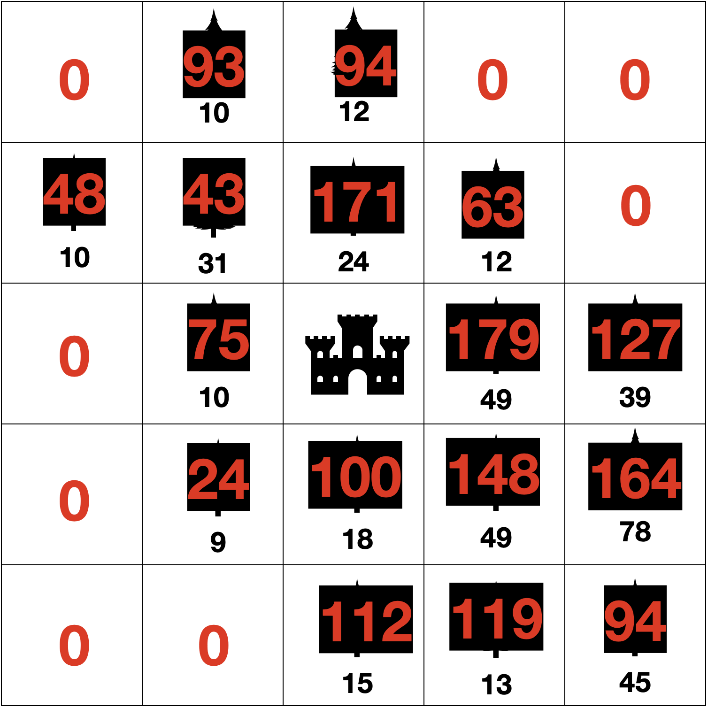
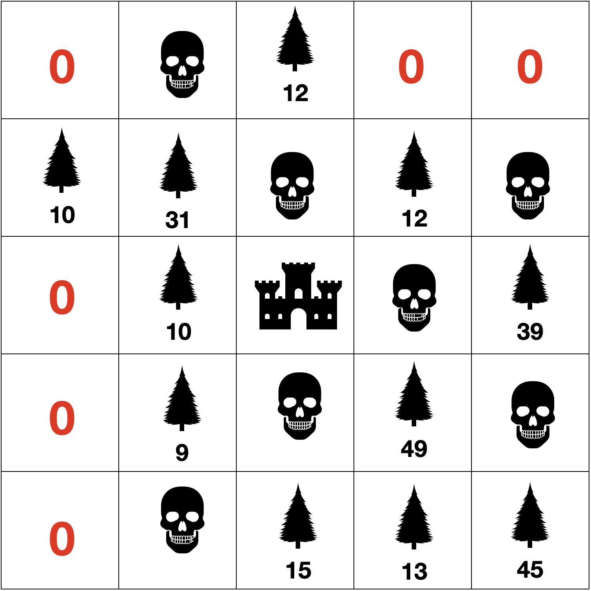

n * n 격자에 나무의 그루 수와 벽의 정보가 주어집니다.
나무의 성장과 번식력이 좋아서 제초제를 뿌려 나무의 성장을 억제하고자 합니다. 제초제의 경우 k의 범위만큼 대각선으로 퍼지며, 벽이 있는 경우 가로막혀서 전파되지 않습니다. 다음과 같이 초기 조건이 주어진다고 가정할 때, 1년동안 나무의 성장과 억제는 다음과 같이 이뤄집니다.
- 인접한 네 개의 칸 중 나무가 있는 칸의 수만큼 나무가 성장합니다. 성장은 모든 나무에게 동시에 일어납니다.
- 기존에 있었던 나무들은 인접한 4개의 칸 중 벽, 다른 나무, 제초제 모두 없는 칸에 번식을 진행합니다. 이때 각 칸의 나무 그루 수에서 총 번식이 가능한 칸의 개수만큼 나누어진 그루 수만큼 번식이 되며, 나눌 때 생기는 나머지는 버립니다. 번식의 과정은 모든 나무에서 동시에 일어나게 됩니다.
- 각 칸 중 제초제를 뿌렸을 때 나무가 가장 많이 박멸되는 칸에 제초제를 뿌립니다. 제초제를 뿌릴 때 4개의 대각선 방향으로 k칸만큼 전파되게 됩니다. 벽이 있는 경우, 그 이후의 칸으로는 제초제가 전파되지 않으며, 제초제가 뿌려지는 칸에 나무가 없는 경우에는 해당 칸에만 제초제가 뿌려지며 대각선으로 전파되지 않습니다. 제초제가 뿌려진 칸에는 c년만큼 제초제가 남아있다가 c+1년째가 될 때 사라지게 됩니다. 제초제가 뿌려진 곳에 다시 제초제가 뿌려지는 경우에는 새로 뿌려진 해로부터 다시 c년동안 제초제가 유지됩니다.
k가 2일 때, 각각의 칸에 제초제가 뿌려진 경우 박멸되는 나무의 총 그루 수는 다음과 같습니다.
3행 4열이 가장 많은 나무를 박멸시키는 것을 알 수 있으며, 해당 칸에 제초제를 뿌리게 됩니다. 만약 박멸시키는 나무의 수가 동일한 칸이 있는 경우에는 행이 작은 순서대로, 만약 행이 같은 경우에는 열이 작은 칸에 제초제를 뿌리게 됩니다.
3행 4열에 제초제를 뿌린 이후에는 다음과 같이 변하게 됩니다.
각 3개의 과정이 1년에 걸쳐 진행된다고 했을 때, m년 동안 총 박멸한 나무의 그루 수를 구하는 프로그램을 작성해보세요.
위의 경우에서 제초제가 1년간 유지된다고 가정했을 때, 그 다음 1년동안의 과정을 그려보면 다음과 같습니다.
- 시작
- 나무의 성장
- 나무의 번식
- 제초제를 뿌릴 위치 선정
- 제초제를 뿌리는 작업 진행
입력 형식
첫 번째 줄에 격자의 크기 n, 박멸이 진행되는 년 수 m, 제초제의 확산 범위 k, 제초제가 남아있는 년 수 c가 공백을 사이에 두고 주어집니다.
이후 n개의 줄에 걸쳐 각 칸의 나무의 그루 수, 벽의 정보가 주어집니다. 총 나무의 그루 수는 1 이상 100 이하의 수로, 빈 칸은 0, 벽은 -1으로 주어지게 됩니다.
- 5 ≤ n ≤ 20
- 1 ≤ m ≤ 1000
- 1 ≤ k ≤ 20
- 1 ≤ c ≤ 10
출력 형식
m년 동안 총 박멸한 나무의 그루 수를 구하세요.
입출력 예제
예제 1
입력 :
5 1 2 1
0 0 0 0 0
0 30 23 0 0
0 0 -1 0 0
0 0 17 46 77
0 0 0 12 0
출력 :
179
예제 2
입력 :
5 2 2 1
0 0 0 0 0
0 30 23 0 0
0 0 -1 0 0
0 0 17 46 77
0 0 0 12 0
출력 :
330
제한
시간제한 : 1000ms
메모리 제한 : 80MB